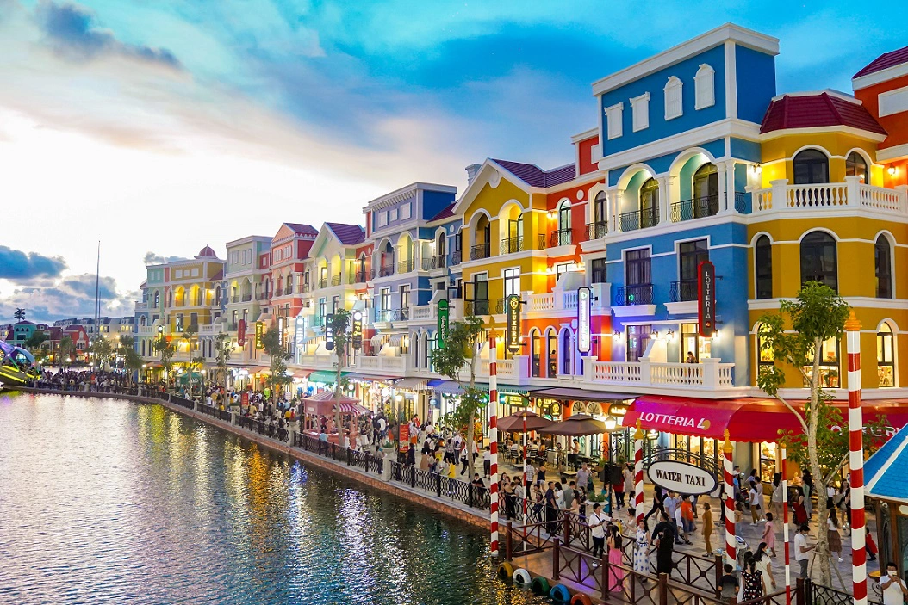
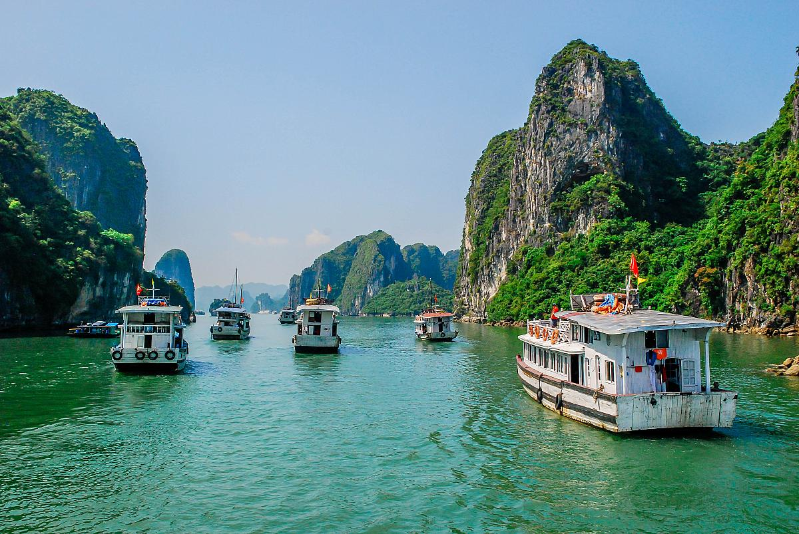
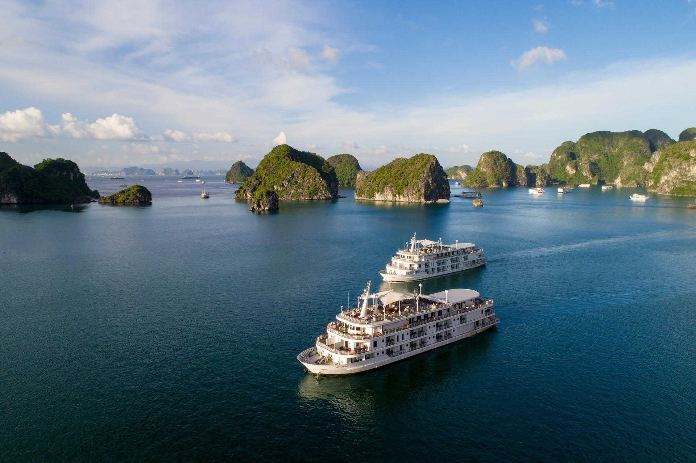

PHÚ QUỐC
Hướng dẫn du lịch Phú Quốc. Nguồn YouTube
Không phải tự nhiên mà Phú Quốc được mệnh danh là “đảo ngọc” của Việt Nam. Nơi đây sở hữu những bãi biển quyến rũ nhất thế giới, có cả thiên nhiên đa dạng và những điểm dừng chân đậm chất văn hóa địa phương. Nếu đang lên kế hoạch cho chuyến du lịch Phú Quốc năm 2024 này, thì ngại gì không lưu ngay những kinh nghiệm du lịch Phú Quốc dưới đây và một chuyến du lịch tuyệt vời đang chờ bạn đến tận hưởng đấy!
Khám phá hình ảnh du lịch Phú Quốc đầy màu sắc và tuyệt vời
Sơ lược về đảo Phú Quốc
Phú Quốc là một hòn đảo nằm ở Cực Nam của Việt Nam, địa giới hành chính thuộc tỉnh Kiên Giang, nằm trong Vịnh Thái Lan. Từ lâu, Phú Quốc được biết đến là một trong những địa điểm du lịch nổi tiếng ở miền Nam Việt Nam mà bất kì du khách nào cũng nên ghé thăm.
Sơ lược Phú Quốc Nguồn YouTube
Đường bờ biển của Phú Quốc dài hơn 150km, trải dài từ phía Bắc đảo đến Nam Đảo. Ngoài ra, xuyên suốt chuyến du lịch Phú Quốc, bạn sẽ được tận mắt nhìn thấy gần 100 ngọn núi đồi nguyên sinh với hệ động thực vật cực kỳ phong phú.
Bên cạnh hệ sinh thái đa dạng, khi du lịch Phú Quốc, bạn sẽ còn có dịp để tham gia những hoạt động vui chơi tuyệt vời với những trải nghiệm hết sức độc đáo tại khu du lịch Vin Wonders Phú Quốc. Nếu vẫn còn thời gian, bạn có thể mua vé cáp treo đi Sun World Hòn Thơm để trải nghiệm những hoặt động du lịch khác nhé.
Ngoài ra, nếu bạn là người thích tìm hiểu văn hóa địa phương, lắng nghe những câu chuyện thú vị về Phú Quốc thì đừng bỏ qua những địa điểm du lịch địa phương như Chợ Đêm Dinh Cậu, Vườn Tiêu Phú Quốc, Nhà thùng nước nắm ở Phú Quốc,...
Đi du lịch Phú Quốc mùa nào đẹp nhất ?
Theo nhiều bạn có kinh nghiệm du lịch Phú Quốc, để chọn thời điểm đi du lịch thuận tiện nhất, bạn cần nắm rõ đặc điểm thời tiết khí hậu của Phú Quốc. Nằm ở khu vực Miền Nam của Việt Nam, đảo Phú Quốc sở hữu khí hậu nhiệt đới gió mùa rõ rệt. Thời tiết của Phú Quốc được chia thành hai mùa: mùa mưa và mùa khô:
Mùa khô ở Phú Quốc: mùa khô tại đây kéo dài từ tháng 11 đến khoảng tháng 4 năm sau. Vào thời điểm này, thời tiết của Phú Quốc nắng đẹp, ít mưa, khí hậu dễ chịu. Do đó, mùa khô là thời điểm thích hợp nhất để đi du lịch Phú Quốc
Mùa mưa ở Phú Quốc: từ tháng 5 đến tháng 10. Lúc này, thời tiết của Phú Quốc dễ xuất hiện những mưa vừa và lớn. Nếu bạn du lịch Phú Quốc vào thời gian này bằng thuyền thì sẽ có thể gặp những đợt sóng lớn, ảnh hưởng không nhỏ đến chuyến đi. Do đó, nếu lựa chọn du lịch Phú Quốc vào mùa mưa, bạn có thể cân nhắc lựa chọn các điểm đến ở Bắc đảo như Bãi Dài hoặc Bãi Đất đỏ ở Nam đảo
Một điều cần lưu ý về thời gian tiện lợi để du lịch Phú Quốc là khi bước vào giai đoạn giao mùa (tháng 11), thì Phú Quốc lúc này cũng có nhiều biến động, thay đổi thất thường. Do đó, trước khi đi du lịch Phú Quốc, bạn cần tham khảo dự báo thời tiết và lựa chọn đồ dùng thích hợp để thuận tiện cho chuyến đi.

Nhờ khí hậu ôn hòa mà bạn có thể đi du lịch Phú Quốc quanh năm
Chuẩn bị gì cho chuyến du lịch Phú Quốc
Để chuyến du lịch Phú Quốc diễn ra thuận lợi, bạn cần chuẩn bị những vật dụng liên quan và cần thiết dưới đây.
Giấy tờ tùy thân: không chỉ khi du lịch Phú Quốc, mà khi đi bất kì nơi nào, bạn cũng cần phải mang theo giấy tờ tùy thân để tiến hành check in sân bay, khách sạn hoặc các phương tiện di chuyển khác. Ngoài ra, việc mang giấy tờ tùy thân cũng là một phương pháp phòng hờ cho những chuyện xảy ra ngoài mong muốn trong chuyến đi của bạn
Trang phục: Do tính chất của chuyến du lịch Phú Quốc là chuyến đi dài ngày, du lịch nghỉ dưỡng, bạn nên mang những trang phục đề cao tính thoải mái, thuận tiện khi di chuyển. Ngoài ra, nếu bạn có ý định ghé thăm những địa điểm tôn giáo trang nghiêm thì nên mang theo quần dài hoặc áo khoác che vai.
Đồ dùng cá nhân: Một số đồ dùng cá nhân không thể thiếu khi du lịch Phú Quốc bao gồm khẩu trang, nước rửa tay khử khuẩn, kính mát, máy ảnh, kem chống nắng, tiền mặt...
VỊNH HẠ LONG
Hướng dẫn du lịch Hạ Long. Nguồn YouTube
Cách Hà Nội khoảng 160 km, TP Hạ Long thuộc tỉnh Quảng Ninh là một điểm du lịch nổi tiếng không chỉ của miền Bắc, toàn quốc mà trên khắp thế giới. Hạ Long có vịnh biển, có các di sản thế giới, các hoạt động du lịch phong phú, đồ ăn ngon...
Vịnh Hạ Long là di sản thế giới có vẻ đẹp tự nhiên hút hồn du khách trong và ngoài nước. Vịnh có hàng nghìn đảo đá vôi lớn nhỏ với đủ hình thù nằm rải rác, tạo nên khung cảnh kỳ vĩ và khác biệt với phần còn lại của thế giới. Một lựa chọn phổ biến là đi tàu ngắm cảnh với các hành trình đi qua những điểm như hòn Gà Chọi, hòn Đỉnh Hương, hang Sửng Sốt, động Thiên Cung, đảo Titop...
Để trải nghiệm trọn vẹn nhất, bạn nên nghỉ dưỡng trên du thuyền. Bạn sẽ tận hưởng không gian yên tĩnh, không khí trong lành khi du ngoạn giữa vùng nước mênh mông của vùng vịnh kín, ít sóng và gió.
Ở Hạ Long có nhiều hãng tàu dịch vụ tiêu chuẩn 1- 5 sao như Heritage Cruises, Paradise Cruise, Stellar of the Seas, Indochine, Scarlet Pearl Cruises, Orchid, Starlight Hạ Long, Dragon Legend... Nếu bạn đi theo nhóm hoặc gia đình nhỏ nên chọn các gói tour du lịch. Với gia đình đông thành viên hay các đoàn lớn, thuê tàu thăm vịnh Hạ Long Kim's Travel có thể là một lựa chọn phù hợp.
Du thuyền Hạ Long
Trên những "khách sạn nổi", du khách còn được phục vụ bữa ăn sang trọng, tắm trong hồ bơi lộ thiên, ngắm cảnh biển đêm. Một số tour du thuyền lưu trú còn có các trải nghiệm như tập thái cực quyền buổi sáng, tắm biển, chèo thuyền kayak, câu mực đêm, tham quan các làng chài, trang trại ngọc trai, học nấu ăn...